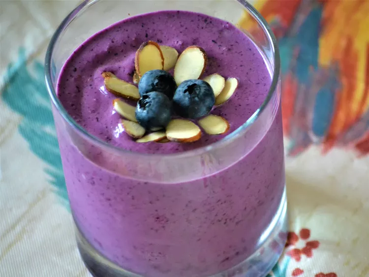

Smoothie Recipe

Description
Almond milk and almond butter are the star ingredients in this berry smoothie with almond milk for a nutritious, on-the-go meal that is vegan and paleo-friendly.
Recipe taken from allrecipes.com
Ingredients
- 1 cup frozen blueberries
- 1 banana
- ½ cup almond milk
- 1 tablespoon almond butter
- water as needed
Steps
- Combine blueberries, banana, almond milk, and almond butter in a blender; blend until smooth, adding water for a thinner smoothie.
- Voila! You have a perfect smoothie for a workout!